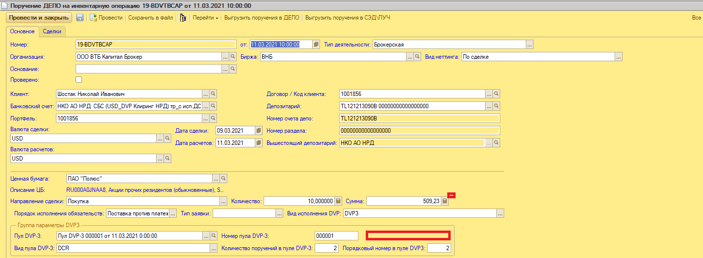
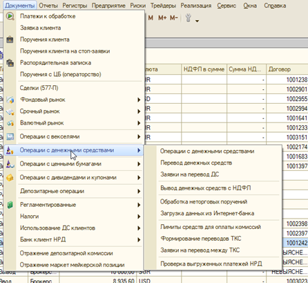
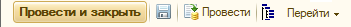
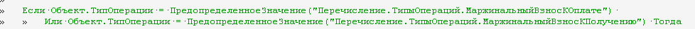
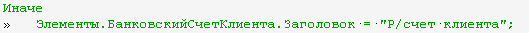

| Задачи | ACCOUNTING-6645, связанные: 6646, 6647, 6649 |
| Источник | Exported From Confluence, 02.09.2026 14:21 MSK. Файл скачан как .doc |
| Зачем здесь | Ответ на претензию 02.09.2026: типы «Маржинальный взнос к уплате / к получению» в «Операции с ДС» были в постановке 2021 года, не случайный занос в ПРОД |
Фраза, которая закрывает спор про «лишние типы»
При проведении документа «Маржинальный взнос» должна автоматически создаваться связанная Операция с ДС
с новым типом «Маржинальный взнос к оплате» или «Маржинальный взнос к получению».
Отдельный документ МВ и новые типы в Операции с ДС в постановке идут вместе, не вместо друг друга.
БТ по задаче
- ИТ доработка — отражение операций с МС (новый документ «Маржинальный взнос» (МВ) на основании Сделки, которая в нем отражается и признается для ВУ основанием, по которому порождаются записи по требованиям/обязательствам в зависимости от направления МВ и их погашению, в т.ч. путем участия в неттинге при расчетах по сделкам).
- ИТ доработка — для букирования трейдеров заводит на основании ранее заведенного БП ВНБ Сделка по РЕПО новое «событие» — МС с указанием всех параметров.
Основной сценарий использования
| Шаг | Описание | Как | Кто | Триггер / комментарий |
|---|---|---|---|---|
| 1 | Создание непроведенной операции Маржинальный взнос | Вручную | Трейдеры | Запрос на Маржинальный взнос к оплате от контрагента по сделке РЕПО |
| 2 | Статус МВ «Новый» | Автоматически | — | |
| 3 | Проведение операции Маржинальный взнос | Вручную | Бэк-офис | Проверка корректности шага 1 |
| 4 | Создание связанной непроведенной Операции с ДС | Автоматически | — | Здесь появляются новые типы операции с ДС |
| 5 | Статус МВ «Подтвержден» | Автоматически | — | |
| 6 | Проведение Операции с ДС | Вручную | Бэк-офис | Перевод ДС контрагенту в рамках оплаты МВ. Вручную до ACCOUNTING-6647 |
| 7 | Статус МВ «Оплачен» | Автоматически | — | |
| 8 | Статус МВ «Возвращен» | Автоматически | — | Исполнение поручения ДЕПО по 2-й части РЕПО. В поручение ДЕПО ИЦ добавить поле «Сумма марж. взносов» (на 1-ю часть РЕПО может быть больше одного МВ). Поле «Сумма» корректировать с учетом взносов и направлений. Подсказка при ненулевой сумме марж. взносов. На структуру поручения в депозитарии не влияет. |

Функциональные требования
В 1С ИЦ создать новый документ «Маржинальный взнос». Доступ — через новый подраздел с таким названием в разделе «Операции с денежными средствами»:

Также создание МВ через «Создать на основании» в карточке БП ВнБ.
Поля документа «Маржинальный взнос»

- Номер — строка, недоступно для редактирования, автонумерация с 000000001.
- Дата возникновения — дата/время, обязательное, по умолчанию текущие.
- Основание — ссылка на сделку по 1-й части РЕПО, обязательное, связь через структуру подчиненности.
- Организация — из сделки-основания.
- Статус — не редактируется: Новый, Подтвержден, Оплачен, Возвращен.
- Дата оплаты — дата, обязательное.
- Биржа, Тип деятельности, Валюта — из сделки-основания.
- Вид — «К оплате» / «К получению», по умолчанию «К оплате».
- Сумма — число, обязательное.
- Сторона 1 (как в БП ВнБ): клиент/контрагент, договор/код клиента, портфель, банковский счет — из основания.
- Сторона 2: клиент/контрагент, договор/код клиента из основания; расчетный счет заполняется вручную.
- Комментарий — необязательное. Логика могла меняться в ACCOUNTING-6649.
Новые типы Операции с ДС — прямое требование, не самодеятельность
Как в шагах 3-5: при проведении «Маржинальный взнос» автоматически создается связанная через структуру подчиненности
Операция с ДС с новым типом «Маржинальный взнос к оплате» или «Маржинальный взнос к получению».
Пример автоматически созданной Операции с ДС с типом «Маржинальный взнос к оплате» и РС, на который перечисляются ДС контрагенту:

Code review (из той же страницы)
| № | Замечание |
|---|---|
| 1 |
 |
| 2 |
 |